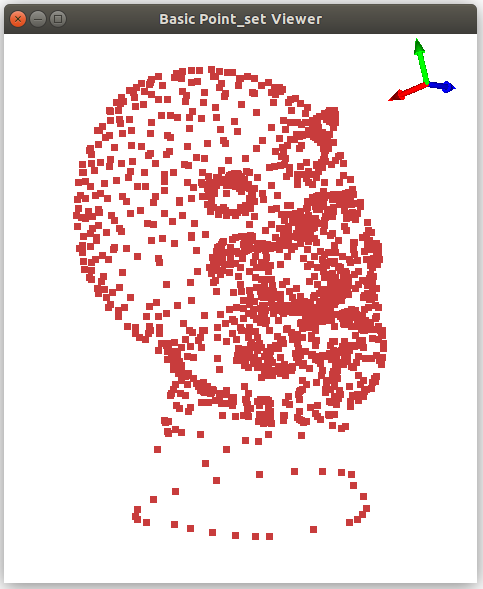

- Author
- Simon Giraudot
CGAL provides several algorithms for processing point sets, ranging from Shape Detection to Surface Reconstruction through standard Point Set Processing tools.
While these algorithms do not impose specific data structures to work on, this package provides a 3D point set structure to make it easier for the user to handle additional properties such as normal vectors, colors, labels, and to call CGAL algorithms on them.
General Principle
CGAL::Point_set_3<Point,Vector> is a vector based data structure that contains a default property (named point) for the coordinates of the points.
Any property the user needs can be easily added, modified, and removed at runtime. A property is identified by a unique name and a type. Convenience methods are provided to handle the normal vectors (property named normal) that is a very common property on point sets.
To optimize memory allocation and deallocation, each point is associated an index. The removal of a point simply marks the index as removed. Internally, this avoids the property vectors to be modified at each removal, and allow insertion of new points to reuse indices of points marked as removed. In particular this implies that a point inserted after some removal was done might has a non default initialized property. If the user needs memory to be effectively deallocated, the element marked as removed can be actually deleted from memory using Point_set_3::garbage_collect().
Simple Usage
The data structure is designed to be easy to use despite its potential complexity when using properties. Several convenience methods are provided to handle points and normals without having to handle properties directly.
The following example shows how to fill a point set, add a normal property, set the normal values, add and remove a point.
File Point_set_3/point_set.cpp
#include <CGAL/Exact_predicates_inexact_constructions_kernel.h>
#include <CGAL/Point_set_3.h>
#include <fstream>
#include <limits>
void print_point_set (const Point_set& point_set)
{
std::cerr << "Content of point set:" << std::endl;
for (Point_set::const_iterator it = point_set.begin();
it != point_set.end(); ++ it)
std::cerr << "* Point " << *it
<< ": " << point_set.point(*it)
<< " with normal " << point_set.normal(*it)
<< std::endl;
}
int main (int, char**)
{
Point_set point_set;
point_set.insert (Point (0., 0., 0.));
point_set.insert (Point (0., 0., 1.));
point_set.insert (Point (0., 1., 0.));
point_set.add_normal_map();
print_point_set(point_set);
Point_set::iterator it = point_set.begin();
point_set.normal(*(it++)) = Vector (1., 0., 0.);
point_set.normal(*(it++)) = Vector (0., 1., 0.);
point_set.normal(*(it++)) = Vector (0., 0., 1.);
point_set.insert (Point (1., 2., 3.), Vector (4., 5., 6.));
print_point_set(point_set);
Point_set::iterator new_item = point_set.insert(Point (7., 8., 9.));
point_set.normal(*new_item) = Vector (10., 11., 12.);
print_point_set(point_set);
point_set.remove (point_set.begin() + 2,
point_set.begin() + 4);
print_point_set(point_set);
std::cerr << "Number of removed points: " <<point_set.number_of_removed_points() << std::endl;
point_set.collect_garbage();
std::cerr << "After garbage collection: " <<point_set.number_of_removed_points() << std::endl;
return 0;
}
Using Additional Properties
Every information in the point set is a property. A raw point set comes only with a point property. As we saw in the previous example, the user can easily add a normal property. But this mechanism is generalized to any type of property.
The following example shows how to define a color property and an intensity property, and how to modify the point set according to this.
File Point_set_3/point_set_property.cpp
#include <CGAL/Exact_predicates_inexact_constructions_kernel.h>
#include <CGAL/Point_set_3.h>
#include <CGAL/Random.h>
#include <fstream>
#include <limits>
typedef std::array<unsigned char, 3> Color;
typedef Point_set::Property_map<Color> Color_map;
typedef Point_set::Property_map<FT> FT_map;
void print_point_set (const Point_set& point_set)
{
Color_map color;
boost::tie (color, boost::tuples::ignore) = point_set.property_map<Color>("color");
FT_map intensity;
boost::tie (intensity, boost::tuples::ignore) = point_set.property_map<FT>("intensity");
std::cerr << "Content of point set:" << std::endl;
for (Point_set::const_iterator it = point_set.begin(); it != point_set.end(); ++ it)
{
std::cerr << "* Point " << point_set.point(*it)
<< " with color [" << static_cast<int>(color[*it][0])
<< " " << static_cast<int>(color[*it][1])
<< " " << static_cast<int>(color[*it][2])
<< "] and intensity " << intensity[*it]
<< std::endl;
}
}
int main (int, char**)
{
Point_set point_set;
Color black = {{ 0, 0, 0 }};
bool success = false;
Color_map color;
boost::tie (color, success) = point_set.add_property_map<Color> ("color", black);
assert (success);
FT_map intensity;
boost::tie (intensity, success) = point_set.add_property_map<FT> ("intensity", 0.);
assert (success);
point_set.reserve (10);
for (std::size_t i = 0; i < 10; ++ i)
{
Point_set::iterator it = point_set.insert (Point (double(i), double(i), double(i)));
Color c = {{ static_cast<unsigned char>(CGAL::get_default_random().get_int(0, 255)),
static_cast<unsigned char>(CGAL::get_default_random().get_int(0, 255)),
static_cast<unsigned char>(CGAL::get_default_random().get_int(0, 255)) }};
color[*it] = c;
intensity[*it] = rand() / static_cast<double>(RAND_MAX);
}
print_point_set (point_set);
Point_set::iterator it = point_set.begin();
while (it != point_set.end())
{
if (intensity[*it] < 0.5)
point_set.remove(it);
else
++ it;
}
print_point_set (point_set);
return 0;
}
Applying CGAL Algorithms
Most CGAL algorithms let the user free to choose an input data structure: the points and attributes are then accessed through ranges and property maps. The CGAL::Point_set_3 class is a range that provides property maps: applying CGAL algorithms is straightforward.
As the Point Set Processing algorithms use Named Parameters to handle property maps, a method CGAL::Point_set_3::parameters() is provided: it returns a named parameter object with the right point and normal maps to read and write in the point set object.
In addition, all input/output functions of the package Point Set Processing are overloaded so that the user only has to call them with a CGAL::Point_set_3 object as a parameter (see Input/Output).
Point Set Processing
The following example shows how to apply some algorithms from the CGAL library using a point set object:
File Point_set_3/point_set_algo.cpp
#include <CGAL/Exact_predicates_inexact_constructions_kernel.h>
#include <CGAL/Point_set_3.h>
#include <CGAL/jet_estimate_normals.h>
#include <CGAL/grid_simplify_point_set.h>
#include <CGAL/point_generators_3.h>
#include <fstream>
#include <limits>
typedef CGAL::Random_points_on_sphere_3<Point> Point_generator;
<Kernel, Point_set, Point_set::Point_map, Point_set::Vector_map> Traits;
int main (int, char**)
{
Point_set point_set;
Point_generator generator(1.);
std::size_t nb_pts = 10000;
point_set.reserve (nb_pts);
for (std::size_t i = 0; i < nb_pts; ++ i)
point_set.insert (*(generator ++));
point_set.add_normal_map();
CGAL::jet_estimate_normals<CGAL::Sequential_tag>
(point_set,
12,
point_set.parameters().
degree_fitting(2));
(point_set,
0.1);
std::vector<std::string> properties = point_set.properties();
std::cerr << "Properties:" << std::endl;
for (std::size_t i = 0; i < properties.size(); ++ i)
std::cerr << " * " << properties[i] << std::endl;
Efficient_ransac ransac;
ransac.set_input(point_set,
point_set.point_map(),
point_set.normal_map());
ransac.add_shape_factory<Sphere>();
Efficient_ransac::Parameters parameters;
parameters.probability = 0.05;
parameters.min_points = std::size_t(point_set.size() / 3);
parameters.epsilon = 0.01;
parameters.cluster_epsilon = 0.5;
parameters.normal_threshold = 0.9;
ransac.detect(parameters);
for(boost::shared_ptr<Efficient_ransac::Shape> shape : ransac.shapes())
if (Sphere* sphere = dynamic_cast<Sphere*>(shape.get()))
std::cerr << "Detected sphere of center " << sphere->center()
<< " and of radius " << sphere->radius() << std::endl;
return 0;
}
Input/Output
The following example shows how to read a point set in the XYZ format, normalize and invert the normal vectors, and write the result in the OFF format.
File Point_set_3/point_set_read_xyz.cpp
#include <CGAL/Exact_predicates_inexact_constructions_kernel.h>
#include <CGAL/Point_set_3.h>
#include <fstream>
#include <limits>
int main (int argc, char** argv)
{
Point_set point_set;
{
std::cerr << "Can't read input file " << std::endl;
return EXIT_FAILURE;
}
if (point_set.has_normal_map())
{
for (Point_set::iterator it = point_set.begin(); it != point_set.end(); ++ it)
{
Vector n = point_set.normal(*it);
point_set.normal(*it) = n;
}
}
if(!
CGAL::IO::write_OFF(
"normalized_normals.off", point_set, CGAL::parameters::stream_precision(17)))
return EXIT_FAILURE;
return EXIT_SUCCESS;
}
The PLY format is the usual choice when storing an arbitrary number of additional properties of points is needed. CGAL provides a function read_PLY() that allows the user to recover any PLY property wanted, provided the adapted PLY interpreter is implemented.
A CGAL::Point_set_3 object can be filled with all readable properties of a PLY input. Each PLY property is read and stored into as a property with similar name and type.
For example, if the following line is found in the PLY header:
property uchar red
Then a property named red and with type boost::uint8_t (boost types are used because of their fixed memory size) will be instantiated in the point set and filled with the corresponding values.
Points and normals are recovered as properties with specific class types (namely the template types Point and Vector). Other non-1D properties are stored with simple number types. For example, if a color is given with integer red, green and blue values, 3 integer properties red, green and blue will be created. A user-defined interpreter must be implemented if such properties should be stored all together (a unique property color of type std::array for example).
The following example shows how to use this interpreter and how to access a specific property afterwards:
File Point_set_3/point_set_read_ply.cpp
#include <CGAL/Exact_predicates_inexact_constructions_kernel.h>
#include <CGAL/Point_set_3.h>
#include <fstream>
#include <limits>
int main (int argc, char** argv)
{
std::ios_base::binary);
Point_set point_set;
{
std::cerr << "Can't read input file " << std::endl;
return EXIT_FAILURE;
}
std::vector<std::string> properties = point_set.properties();
std::cerr << "Properties:" << std::endl;
for(std::size_t i = 0; i < properties.size(); ++ i)
std::cerr << " * " << properties[i] << std::endl;
Point_set::Property_map<boost::int32_t> label_prop;
bool found = false;
boost::tie(label_prop, found) = point_set.property_map<boost::int32_t> ("label");
if(found)
{
std::cerr << "Point set has an integer \"label\" property with values:" << std::endl;
for (Point_set::iterator it = point_set.begin(); it != point_set.end(); ++ it)
std::cerr << " * " << label_prop[*it] << std::endl;
}
if(argc > 2 && strcmp (argv[2], "-b") == 0)
{
}
else
{
.use_binary_mode(false));
}
return 0;
}
Advanced Usage
Using functions of CGAL to read files requires a slightly different behavior because internally the properties of a point are defined before this point is inserted into the point set (which is not possible with CGAL::Point_set_3). Although using the provided overloads presented in the previous subsection should cover most usages, we document the specific back inserters and property maps that are used internally:
CGAL::Point_set_3::index_back_inserter() is used as an output iterator that creates new points.CGAL::Point_set_3::point_push_map() is a property map for setting the coordinates of a point. It will first insert the point create in the structure if it has not been created first (by index_back_inserter() for example).CGAL::Point_set_3::normal_push_map() works similarly but for normal vectors.
Such push property maps are also available for other user-defined properties (see CGAL::Point_set_3::push_property_map()).
The following example shows how to read OFF point without using the overload provided for CGAL::Point_set_3:
File Point_set_3/point_set_advanced.cpp
#include <CGAL/Exact_predicates_inexact_constructions_kernel.h>
#include <CGAL/Point_set_3.h>
#include <CGAL/IO/read_points.h>
#include <fstream>
#include <limits>
int main (int argc, char** argv)
{
Point_set point_set;
point_set.add_normal_map();
CGAL::parameters::point_map(point_set.point_push_map())
.normal_map(point_set.normal_push_map())))
{
std::cerr << "Can't read input file " << std::endl;
return EXIT_FAILURE;
}
return EXIT_SUCCESS;
}
Draw a Point Set
A 3D point set can be visualized by calling the CGAL::draw<PS>() function as shown in the following example. This function opens a new window showing the given point set. A call to this function is blocking, that is the program continues as soon as the user closes the window.
File Point_set_3/draw_point_set_3.cpp
#include <CGAL/Exact_predicates_inexact_constructions_kernel.h>
#include <CGAL/Point_set_3.h>
#include <CGAL/draw_point_set_3.h>
#include <fstream>
int main (int argc, char** argv)
{
Point_set point_set;
{
std::cerr << "Can't read input file " << filename << std::endl;
return EXIT_FAILURE;
}
return EXIT_SUCCESS;
}
This function requires CGAL_Qt5, and is only available if the macro CGAL_USE_BASIC_VIEWER is defined. Linking with the cmake target CGAL::CGAL_Basic_viewer will link with CGAL_Qt5 and add the definition CGAL_USE_BASIC_VIEWER.

History
This package has been created to fill the need for a practical data structure that handles points with a user-defined set of properties. A property mechanism was already implemented in the Surface Mesh package: all the classes dedicated to the management of properties were extracted so that they can be used in this package. CGAL::Surface_mesh<Point> and CGAL::Point_set_3<Point,Vector> now follow a similar API for property management.


 1.8.13
1.8.13